Problem
An outdated maintenance system needed an overhaul — but first, that overhaul had to be broken down.
Discover
Organized existing insights, customer feedback, competitive research, and the user journey into shared themes.
Ideate
Widened the net with a team brainstorm, then narrowed in with a technical diagramming workshop.
Define
Weighed user, business, and technical needs to align on three shippable milestones.
Solution
Shipped multiple work orders, multiple bills, and project-level grouping — one milestone at a time.
01Problem
The real challenge wasn't just fixing outdated maintenance tools — it was figuring out how to break a multi-year overhaul into shippable pieces.
Maintenance workflows within the platform were restrictive, outdated, and behind what competitors already offered:
- No way to group related work into a single, trackable project
- Rigid limits — one work order, one vendor, one bill at a time — forced workarounds for anything beyond the simplest request
- Competitors already offered more mature maintenance tools
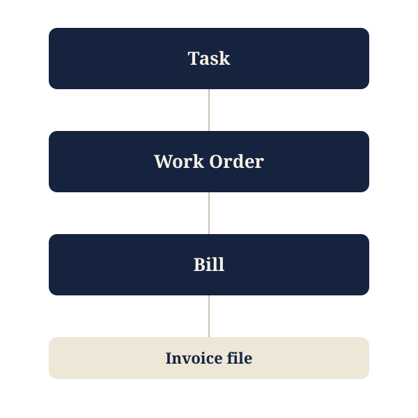
Before: every step in the chain — task to work order to bill — allowed only one connection at a time.
"As a Property Manager, I need to easily manage my maintenance process, so that we can efficiently service & maintain our properties."
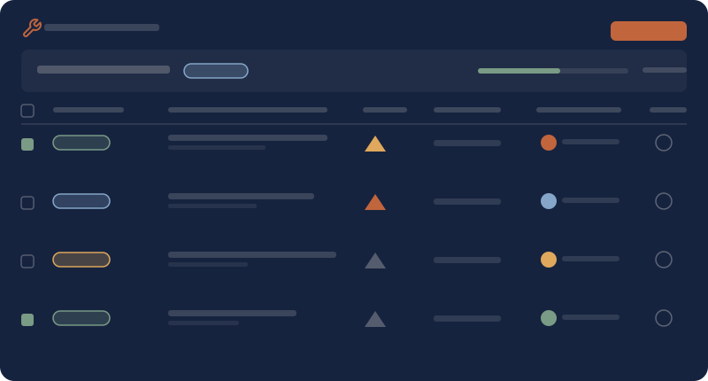
The maintenance module, where property managers track work orders and tasks across their properties.
02Discover
Rather than jump straight to solutions, I pulled together everything we already knew — and used it to find the patterns worth acting on.
Organizing key insights
I organized everything our team already knew about Maintenance into shared themes, because I needed a clear-eyed view of what we knew — and didn't — before we could turn scattered feedback into real roadmap milestones.
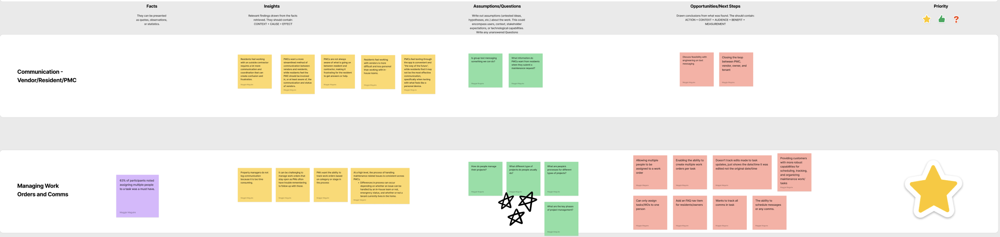
Snapshot of facts, insights, assumptions/questions, opportunities/next steps, and priority organized by focus area.
Analyzing user feedback
I pulled feedback from every channel we had into those same themes, because I wanted a first-hand understanding of what customers were saying before I spoke with them directly, and a set of real quotes and contacts to draw on later.
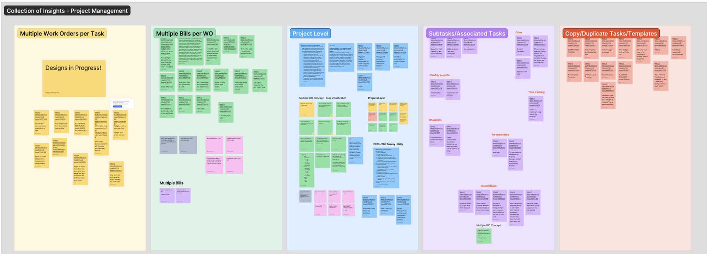
Snapshot of feedback gathered from our customer feedback platform, Uservoice.
Competitive analysis
I compared our offering against direct competitors and dedicated project management tools, because I needed to know where we fell short and which proven patterns were worth adapting for property management.
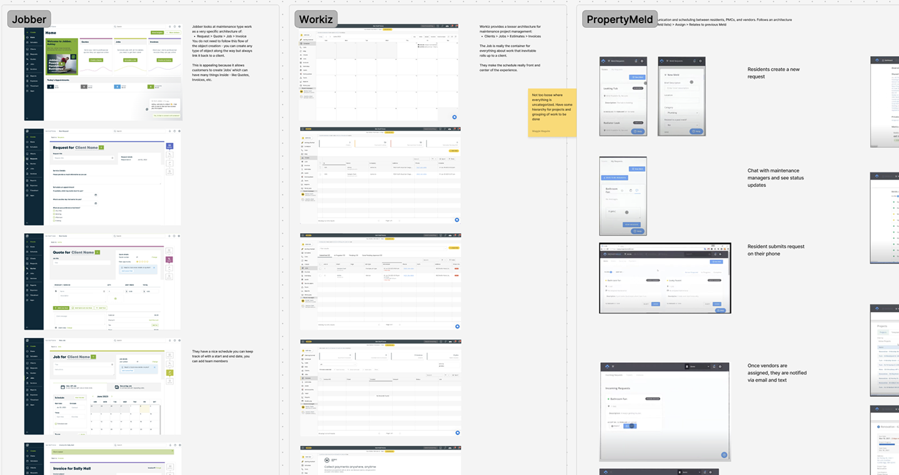
Screenshots and notes on competitor flows.
User journey map
I mapped the end-to-end process across vendor, property manager, and resident roles, because it was the one piece of discovery that showed the full picture, not just the parts our product already touched.
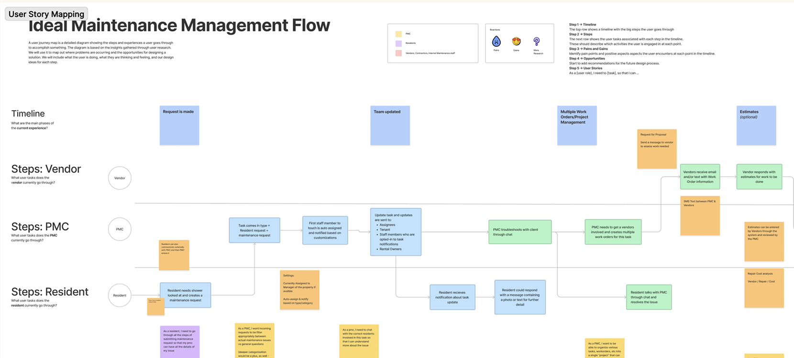
User journey map, organized by role.
03Ideate
Wide open ideas first, then a hard look at what was technically possible.
Team brainstorm
I led a brainstorm with product managers, engineers, and fellow designers, framed around a single "how might we" question, because I wanted a wide net of ideas from every perspective before we started narrowing anything down.
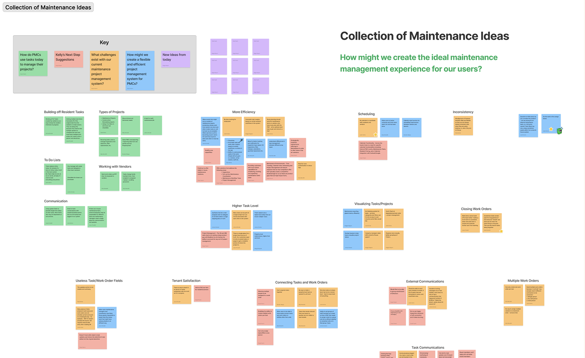
Brainstorm board after grouping ideas together.
Diagram ideation
I brought together our scrum team leads — our product manager, two engineering leads, and me — to map the system's current architecture and sketch a new one based on what discovery had surfaced, because I wanted both user patterns and technical constraints stress-tested in the same room before we committed to milestones.
Result: As a scrum team, we left the workshop aligned on a new entity relationship diagram — the technical foundation that the work from every milestone would eventually build on.
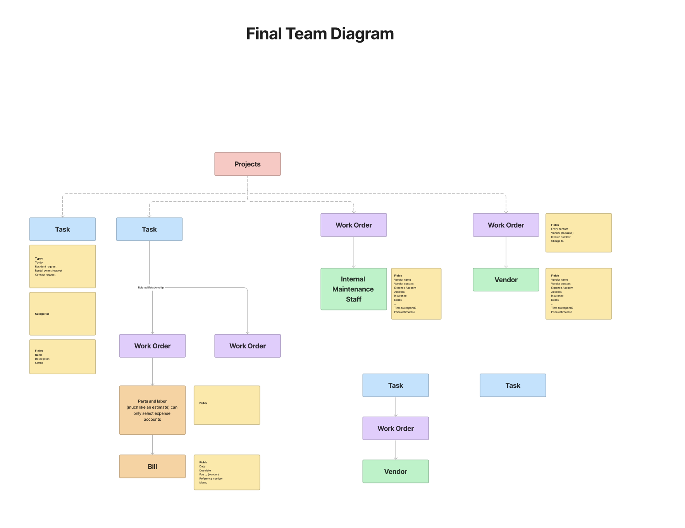
The entity relationship diagram the team aligned on, connecting projects, tasks, work orders, and bills.
04Define
Turning everything we'd learned into a roadmap the whole team could commit to.
I worked with my product manager and lead engineers to weigh user needs, business goals, technical constraints, and scoping budget against each other. I wanted every milestone we chose to be grounded in more than user requests alone. It had to make business sense as well as be technically and financially feasible.
Those milestones were grounded in three business goals:
- Offer a competitive, in-house maintenance solution, so PMCs don't need to leave the platform for something more capable.
- Increase PMC efficiency in completing resident maintenance requests.
- Increase automation and customization for maintenance.
From there, we landed on three milestones:
- Multiple work orders per task — letting users break complex situations into smaller pieces, with several vendors working on the same task.
- Multiple bills per work order — letting users track every cost and bill tied to a single work order.
- Project-level grouping — letting related tasks be grouped and visualized together for large-scale renovation projects.
This work also surfaced two additional epics, loosely scoped but not yet broken down into committed milestones:
- Maintenance time tracking — giving PMCs a clear way to track a task's progress from start to completion, so they can gauge vendor and staff performance and accurately bill hours.
- Maintenance communication — bringing scattered email, call, and text conversations with vendors and residents into the platform, so PMCs aren't relying on outside tools to track them.
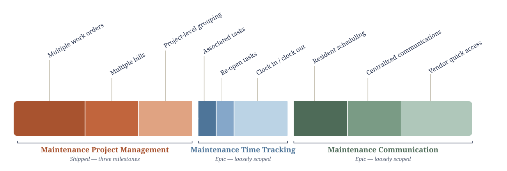
The roadmap that came out of this work, drawn to relative scale — Maintenance Project Management shipped first, followed by the Time Tracking and Communication epics.
Result: We aligned on three milestones and a roadmap spanning about a year and a half of dev work. Even with that early alignment, I kept the roadmap in front of my team at least monthly at our team lead syncs, since priorities could shift with how quickly the AI and software landscape was moving.
05Solution
Three milestones, shipped one on top of the last, each one grounded in what testing told us mattered most.
Milestone 1: Multiple work orders per task
The first milestone let a single task hold more than one work order — so a resident request that needed several vendors (say, a plumber and a drywall repair) could be split across separate work orders instead of forcing everything through one.
Design screens are password protected
This project includes work that isn't publicly shareable.
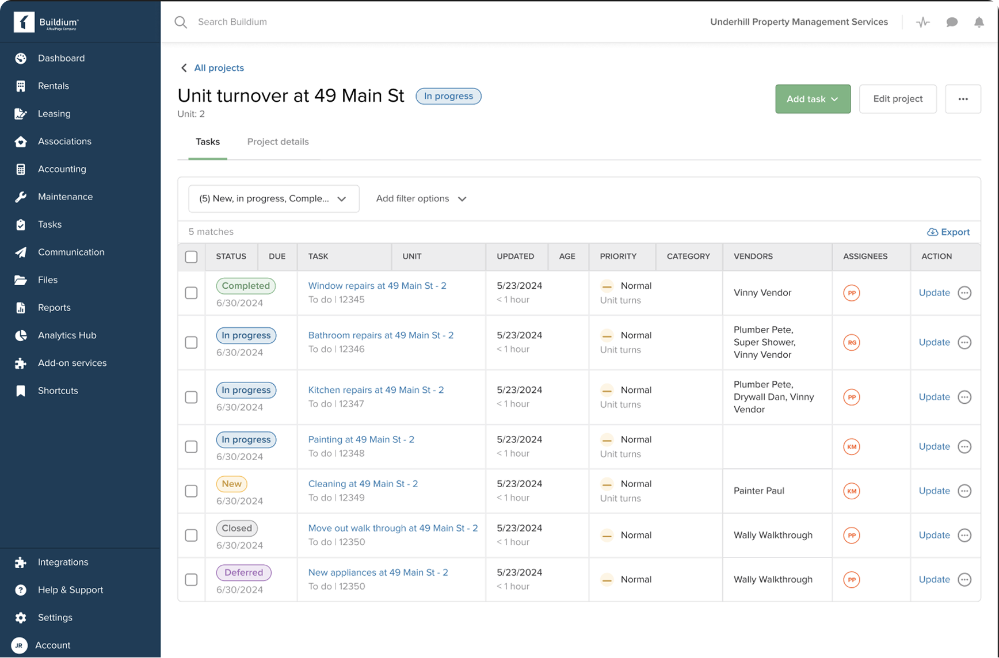
The maintenance module, where property managers track work orders and tasks across their properties.
This table shows every work order tied to a task in one place. Once a task could hold several work orders, users needed a single view of all of them — along with the details testing told us mattered most: status, assignee, priority, vendor, and cost.
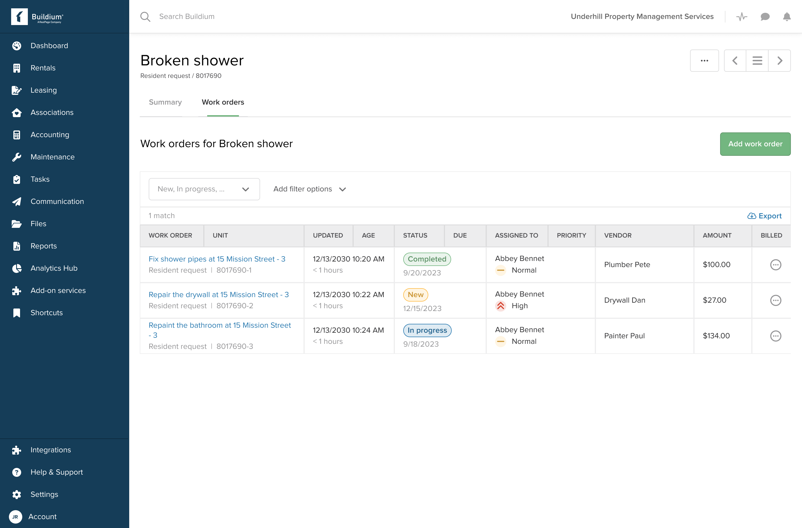
All work orders for a task, in one table.
Creating a work order now starts by attaching it to an existing task, or spinning up a new one, right at the top of the form. From there, Autofill pulls the task's description, files, and entry information directly onto the work order. Vendors get everything they need without a property manager copying it over by hand.
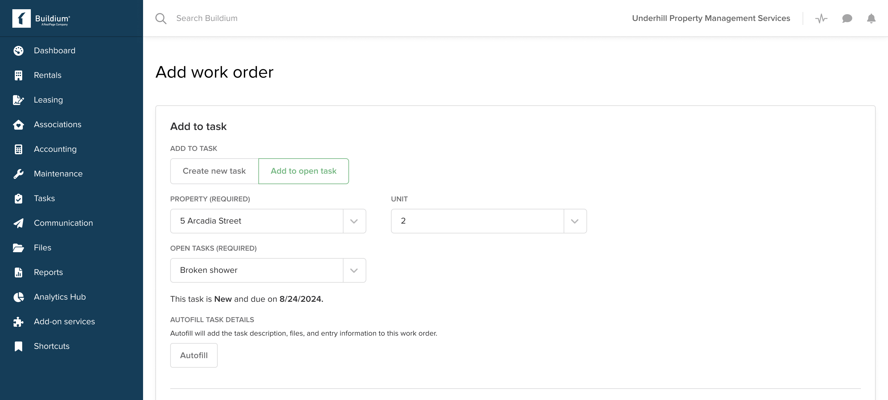
Adding a work order, now connected to its task — with autofill to carry details over automatically.
Milestone 2: Multiple bills per work order
Building on Milestone 1, the second milestone let a single work order carry multiple bills — so users could track every cost tied to a job as it came in, from initial labor to follow-up parts, without losing sight of the total.
Design screens are password protected
This project includes work that isn't publicly shareable.
Research told us users cared most about two things: how much a job was costing in total, and whether it had been paid. So we rolled bill totals up from work order to task level — in this example, $700 spent on the "Broken shower" request — and made payment status visible at a glance. Previously, both required digging into individual bills.
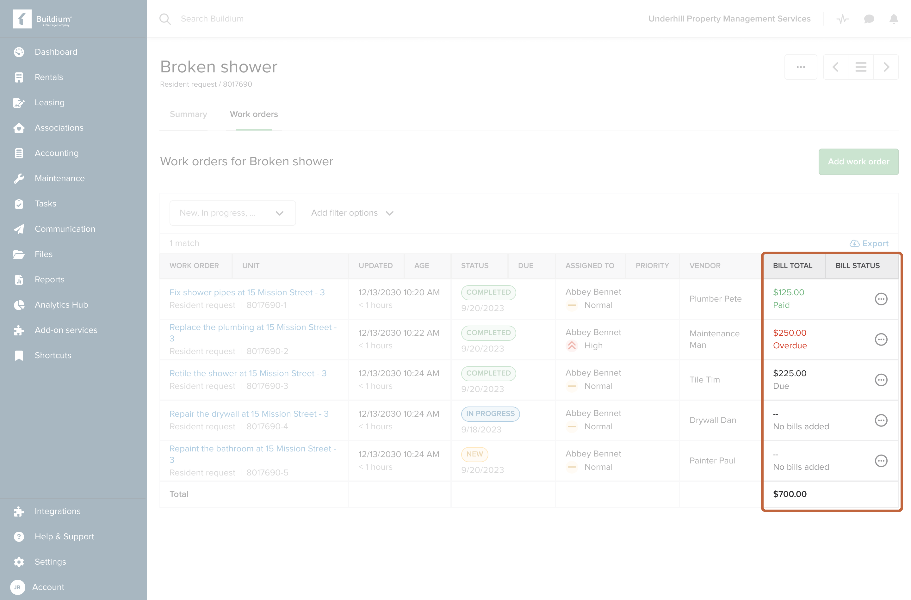
Bill totals and payment status, rolled up to the task level.
Testing showed most work orders carry up to four bills, so those are surfaced directly on the work order page. Beyond that, a link takes users to a table pre-filtered to that work order's bills.
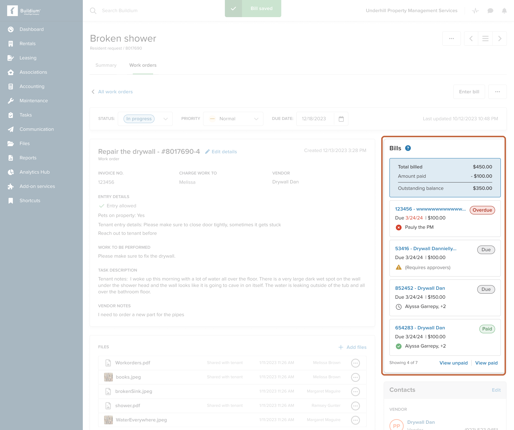
Bills, clearly reflected on the work order page.
Milestone 3: Project-level grouping
The last milestone introduced projects as a new, standalone concept in the platform — letting property managers group related tasks together and track them as a single large-scale renovation or turnover, rather than managing dozens of individual tasks with no connection between them.
Design screens are password protected
This project includes work that isn't publicly shareable.
Just as work orders needed a single home once tasks could hold more than one, projects needed the same. This table gives users one place to see every project across their portfolio, along with status, task completion, and budget at a glance.
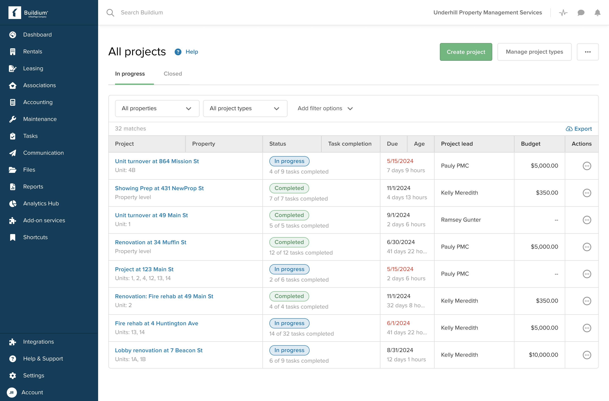
Every project, in one place.
Testing told us users expected to find projects under the existing Tasks section, so that's where we placed it, with a beta tag since some capabilities were still limited. Clicking into a project reuses the same task table that already existed elsewhere, rather than teaching a new pattern. We explored a kanban-style board as an alternative, but scoped it out to ship sooner and collect real usage feedback — it's on the backlog for a future release.
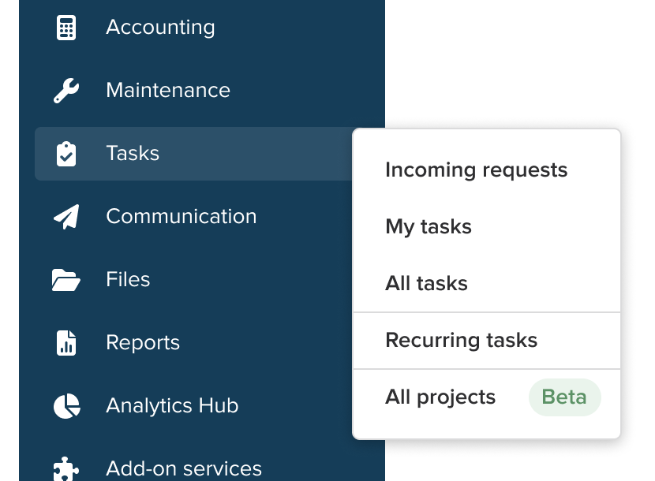
Projects, nested under Tasks — with a beta tag to invite feedback.
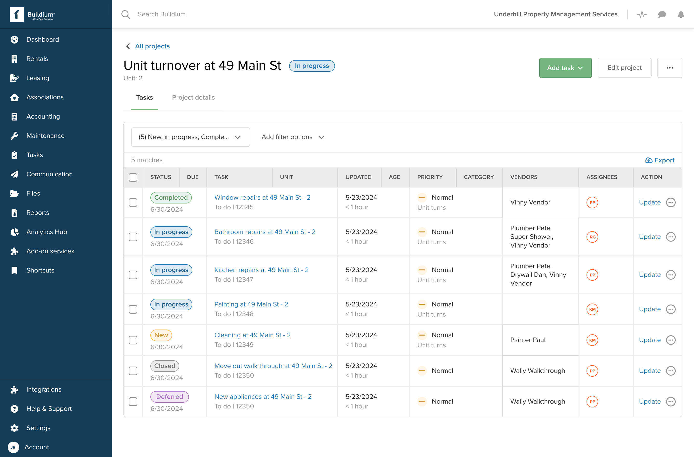
Tasks within a project — the shipped list view.
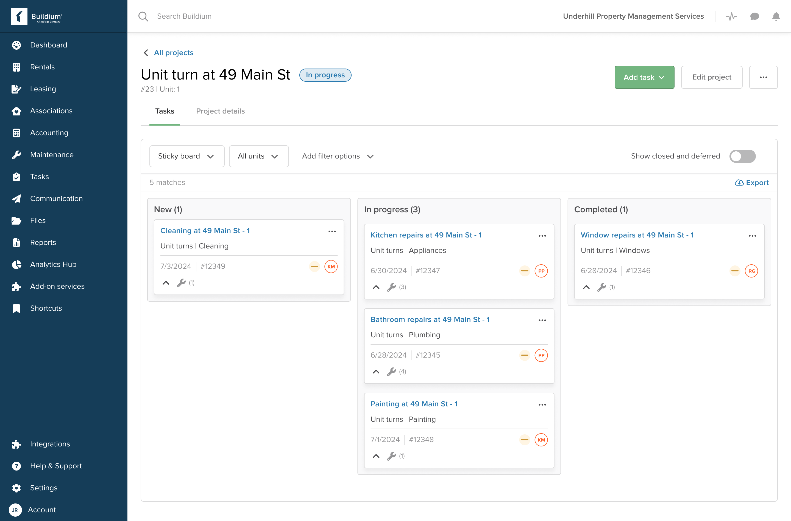
A kanban layout we explored, and may revisit in a future release.
The Project details tab surfaces location, description, and a new Project financials card. Budget tracking at the project level was a new concept, so we kept the first version intentionally simple — estimate, actual expense, and remaining — while we collect feedback and iterate.
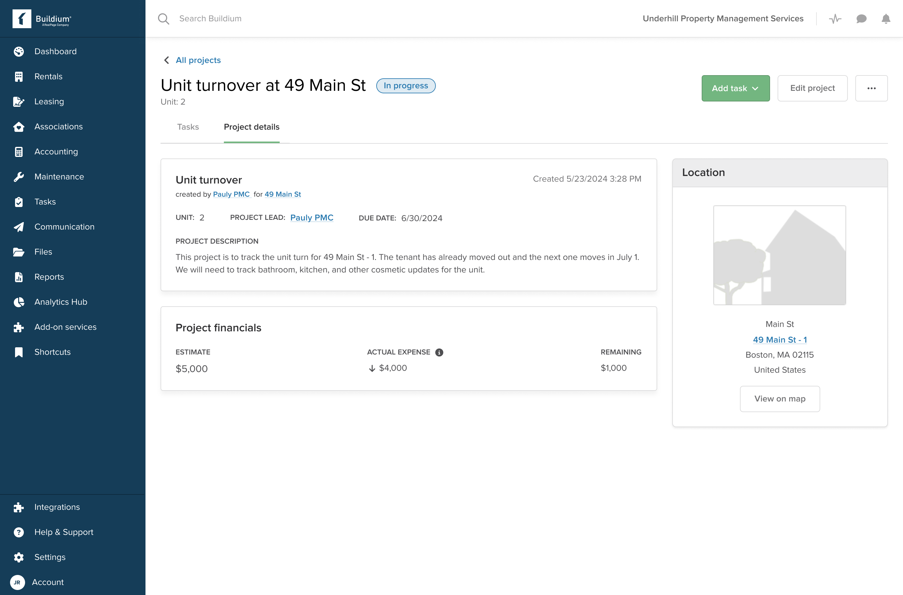
Project details, including the first version of budget tracking.
Maintenance time tracking and maintenance communication — the two epics identified during the Define phase — will have their own case studies as that work is scoped and shipped.